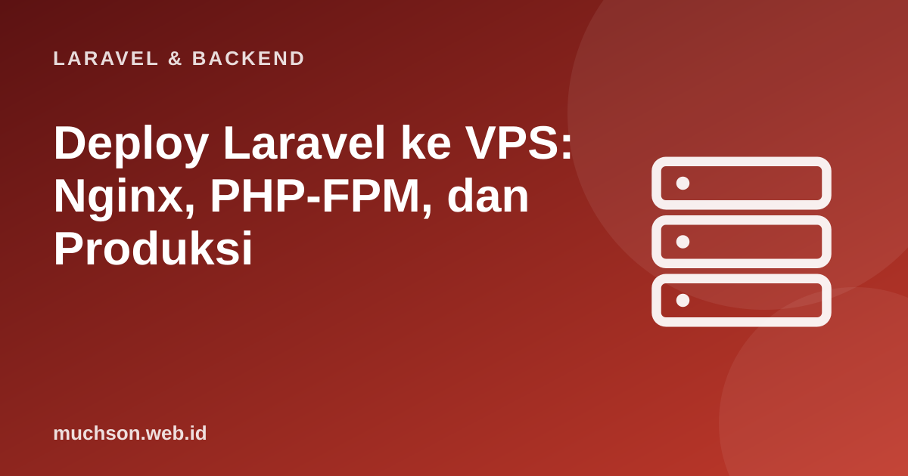

Beranda › Artikel › Laravel & Backend
Laravel & BackendDeploy Laravel ke VPS: Nginx, PHP-FPM, dan Produksi
Aplikasi yang berjalan baik di laptop belum tentu selamat di internet. Deploy adalah titik temu antara kode, server, dan keamanan, dan di sanalah banyak proyek tersandung: halaman putih, galat izin, atau lebih buruk, .env yang terbuka. Panduan ini membawa Anda melalui deploy yang benar ke VPS Ubuntu dengan Nginx dan PHP-FPM, plus alur rilis yang dapat diulang.
Sebaiknya sudah paham: dasar Laravel, command line Linux, Git

Setelah membaca dan mencoba materi ini, Anda mampu:
- menyiapkan server: PHP, Nginx, basis data, dan pengguna khusus
- mengonfigurasi Nginx yang mengarah ke public/ dengan aman
- mengatur izin berkas dan .env produksi
- menjalankan migrasi, optimasi, worker antrean, dan scheduler
- memasang HTTPS dan menyusun alur rilis yang dapat diulang
Kode PHP/Laravel di artikel ini mengikuti dokumentasi Laravel (versi 11 dan seterusnya, PHP 8.2 atau lebih baru). Bagian "cara kerja di balik layar" dijalankan sungguhan dengan Python atau JavaScript agar konsepnya dapat dibuktikan.
Perintah di bawah memodifikasi server nyata. Cobalah dulu di VPS percobaan atau mesin virtual, jangan di server produksi yang sedang dipakai. Nama domain, jalur, dan versi PHP adalah contoh; sesuaikan dengan lingkungan Anda.
Pilihan hosting
| Pilihan | Kendali | Upaya | Cocok untuk |
|---|---|---|---|
| Shared hosting (cPanel) | Rendah | Rendah | Proyek kecil; sering terkendala akses SSH, antrean, versi PHP |
| VPS (DigitalOcean, Vultr, Hetzner, IDCloudHost, Biznet Gio, dll.) | Tinggi | Sedang | Kebanyakan aplikasi Laravel; Anda mengelola server |
| Platform terkelola (Laravel Forge/Cloud, Ploi) | Tinggi | Rendah | Tim yang ingin fokus ke aplikasi; biaya langganan |
| Kontainer (Docker, Kubernetes) | Sangat tinggi | Tinggi | Skala besar dan tim dengan DevOps |
Langkah 1: siapkan server (Ubuntu LTS)
# Masuk sebagai root pertama kali, lalu buat pengguna biasa dan kunci SSH
adduser deploy && usermod -aG sudo deploy
# Firewall: hanya SSH, HTTP, HTTPS
ufw allow OpenSSH && ufw allow "Nginx Full" && ufw enable
# Paket yang dibutuhkan (versi PHP sesuai kebutuhan Laravel Anda, mis. 8.3)
apt update && apt install -y nginx git unzip \
php8.3-fpm php8.3-cli php8.3-mysql php8.3-mbstring php8.3-xml php8.3-curl php8.3-zip php8.3-bcmath php8.3-intl \
mysql-server redis-server supervisor
# Composer
curl -sS https://getcomposer.org/installer | php && mv composer.phar /usr/local/bin/composerLangkah 2: ambil kode dan siapkan aplikasi
cd /var/www
sudo mkdir toko && sudo chown deploy:deploy toko
git clone git@github.com:akun/toko.git toko && cd toko
composer install --no-dev --optimize-autoloader
cp .env.example .env && nano .env # isi nilai produksi (lihat di bawah)
php artisan key:generate
php artisan migrate --force # --force wajib di produksi
php artisan storage:link
php artisan optimize # cache config, route, view, event
# Izin: web server hanya perlu menulis ke storage dan bootstrap/cache
sudo chown -R deploy:www-data storage bootstrap/cache
sudo chmod -R ug+rwX storage bootstrap/cache# .env produksi (contoh)
APP_NAME="Toko"
APP_ENV=production
APP_DEBUG=false # WAJIB false
APP_URL=https://toko.contoh.id
DB_CONNECTION=mysql
DB_HOST=127.0.0.1
DB_DATABASE=toko
DB_USERNAME=toko_app # akun khusus dengan hak terbatas, bukan root
DB_PASSWORD=kata-sandi-acak-yang-panjang
CACHE_STORE=redis
SESSION_DRIVER=redis
QUEUE_CONNECTION=redis
SESSION_SECURE_COOKIE=true
LOG_LEVEL=warningLangkah 3: Nginx
server {
listen 80;
server_name toko.contoh.id;
root /var/www/toko/public; # PENTING: public/, bukan akar proyek
add_header X-Content-Type-Options "nosniff";
add_header X-Frame-Options "SAMEORIGIN";
add_header Referrer-Policy "strict-origin-when-cross-origin";
index index.php;
charset utf-8;
location / {
try_files $uri $uri/ /index.php?$query_string; # semua rute dilayani Laravel
}
location ~ \.php$ {
fastcgi_pass unix:/var/run/php/php8.3-fpm.sock;
fastcgi_param SCRIPT_FILENAME $realpath_root$fastcgi_script_name;
include fastcgi_params;
}
location ~ /\.(?!well-known).* { # blokir berkas tersembunyi (.env, .git)
deny all;
}
client_max_body_size 10M; # batas unggahan
}
# Aktifkan:
# sudo ln -s /etc/nginx/sites-available/toko /etc/nginx/sites-enabled/
# sudo nginx -t && sudo systemctl reload nginxLangkah 4: HTTPS
sudo apt install certbot python3-certbot-nginx
sudo certbot --nginx -d toko.contoh.id # sertifikat gratis Let's Encrypt + pembaruan otomatis
sudo systemctl status certbot.timer # pastikan pembaruan terjadwal aktifLangkah 5: worker, scheduler, dan Supervisor
# /etc/supervisor/conf.d/toko-worker.conf
[program:toko-worker]
command=php /var/www/toko/artisan queue:work --sleep=3 --tries=3 --max-time=3600
user=deploy
autostart=true
autorestart=true
numprocs=2
process_name=%(program_name)s_%(process_num)02d
redirect_stderr=true
stdout_logfile=/var/log/toko-worker.log
stopwaitsecs=3600
# sudo supervisorctl reread && sudo supervisorctl update && sudo supervisorctl start "toko-worker:*"
# crontab -u deploy -e : scheduler Laravel
* * * * * cd /var/www/toko && php artisan schedule:run >> /dev/null 2>&1Alur rilis yang dapat diulang
Menyalin berkas secara manual atau mengedit di server rawan salah. Tulis langkah rilis sebagai skrip agar setiap rilis identik dan dapat ditinjau.
#!/usr/bin/env bash
set -euo pipefail
cd /var/www/toko
php artisan down --retry=60 # mode pemeliharaan sebentar
git pull --ff-only origin main
composer install --no-dev --optimize-autoloader --no-interaction
npm ci && npm run build # bila ada aset front-end (atau bangun di CI dan unggah hasilnya)
php artisan migrate --force
php artisan optimize
php artisan queue:restart # worker memuat kode baru
sudo systemctl reload php8.3-fpm # menyegarkan OPcache
php artisan up
echo "Rilis selesai: $(git rev-parse --short HEAD)"// Gagasan rilis atomik: siapkan folder rilis baru, lalu pindahkan tautan "current" dalam satu langkah
const rilis = ['2026-10-28_a1b2c3', '2026-10-29_d4e5f6'];
let current = rilis[1];
console.log('current ->', current);
const baru = '2026-10-30_0789ab';
rilis.push(baru); // 1. unggah & bangun di folder baru (pengguna tetap memakai versi lama)
console.log('menyiapkan', baru, '... current tetap ->', current);
const sebelumnya = current;
current = baru; // 2. satu operasi atomik: ln -sfn releases/baru current
console.log('beralih : current ->', current);
const sehat = false; // 3. bila pemeriksaan kesehatan gagal, kembali dalam sekejap
if (!sehat) { current = sebelumnya; console.log('rollback : current ->', current); }
console.log('simpan hanya beberapa rilis terakhir:', rilis.slice(-3));current -> 2026-10-29_d4e5f6
menyiapkan 2026-10-30_0789ab ... current tetap -> 2026-10-29_d4e5f6
beralih : current -> 2026-10-30_0789ab
rollback : current -> 2026-10-29_d4e5f6
simpan hanya beberapa rilis terakhir: [ '2026-10-28_a1b2c3', '2026-10-29_d4e5f6', '2026-10-30_0789ab' ]1. Halaman menampilkan 500 dan log menyebut "Permission denied" pada storage/logs. Apa penyebab dan perbaikannya?
2. Mengapa APP_DEBUG=true di produksi berbahaya?
3. Apa keuntungan rilis berdampingan dengan symlink?
4. Bagaimana memastikan .env tidak dapat diunduh?
- VPS + Nginx + PHP-FPM memberi kendali penuh; amankan dengan pengguna khusus, firewall, dan kunci SSH.
- Root web ke public/, .env produksi dengan APP_DEBUG=false, izin minimal, HTTPS via Certbot.
- Migrasi --force, php artisan optimize, Supervisor untuk worker, cron untuk scheduler.
- Skrip rilis yang dapat diulang atau rilis atomik membuat deploy aman dan dapat di-rollback.